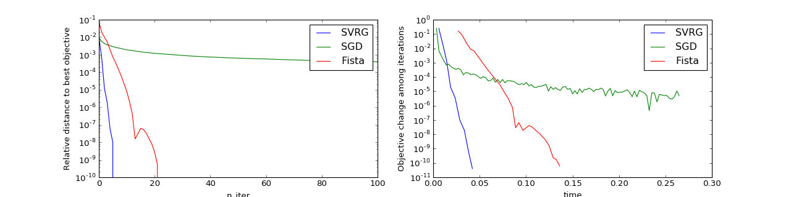

Stochastic solvers¶
This example illustrates the use of several solvers, including
mlpp.optim.solver.SGD, mlpp.optim.solver.SVRG, and
mlpp.optim.solver.Fista.
Contents
Solve¶
Simulation¶
First of all we generate data for logistic regression with given feature vector
w and intercept c.
n_features, n_samples = 5, 10000
np.random.seed(732)
w = np.random.normal(0, 1, n_features)
c = 0.2
sim = SimuLogReg(weights=w, intercept=c, n_samples=n_samples, seed=732, verbose=False)
sim.simulate()
X = sim.features
y = sim.labels
Problem initialization¶
We then create the associated model and the prox that we will use in our solvers.
model = ModelLogReg(fit_intercept=True).fit(X, labels=y)
l_l2sq = 1e-7
prox = ProxL2Sq(strength=l_l2sq)
Solution¶
svrg = SVRG(max_iter=1000, verbose=False, tol=1e-10)
svrg.set_model(model)
svrg.set_prox(prox)
svrg.solve(np.zeros(n_features + 1), 0.1)
>>> print(w, c)
[-1.9505 1.8576 0.2318 0.2274 0.167 ] 0.2
>>> print(svrg.solution)
[-1.9727 1.8532 0.2636 0.2135 0.1936 0.1806]
Plot¶
We can also easily plot and evaluate different solvers on the same problem
import matplotlib.pyplot as plt
import numpy as np
import scipy
from pylab import rcParams
from mlpp.simulation import SimuLogReg
from mlpp.optim.solver import SGD, SVRG, Fista
from mlpp.optim.model import ModelLogReg
from mlpp.optim.prox import ProxL2Sq
rcParams['figure.figsize'] = 16, 4
# We simulate logistic data with feature vector w and intercept c
n_features, n_samples = 5, 10000
w = np.random.normal(0, 1, n_features)
c = 0.2
sim = SimuLogReg(weights=w, intercept=c, n_samples=n_samples)
sim.simulate()
X = sim.features
y = sim.labels
# We create the corresponding model and a prox L2
model = ModelLogReg(fit_intercept=True).fit(X, labels=y)
l_l2sq = 1e-7
prox = ProxL2Sq(strength=l_l2sq)
x0 = np.zeros(n_features + 1)
# We get the reference solution thanks to scipy
# It will be used in order to examine how close our solvers can get to the
# correct answer.
func = lambda x: model.loss(x) + prox.value(x)
fprime = lambda x: model.grad(x) + prox.strength * x
minimizer = scipy.optimize.fmin_l_bfgs_b(func, x0, fprime=fprime)[0]
minimum = func(minimizer)
# SVRG solver
svrg = SVRG(max_iter=100, print_every=3, record_every=1, tol=1e-10)
svrg.set_model(model)
svrg.set_prox(prox)
svrg.history.set_minimizer(minimizer)
svrg.history.set_minimum(minimum)
svrg.solve(x0, 0.1)
# Fista solver
fista = Fista(max_iter=100, print_every=3, record_every=1, tol=1e-10)
fista.set_model(model)
fista.set_prox(prox)
fista.history.set_minimizer(minimizer)
fista.history.set_minimum(minimum)
fista.solve(x0)
# SGD solver
sgd = SGD(max_iter=100, print_every=10, record_every=1, tol=1e-10)
sgd.set_model(model)
sgd.set_prox(prox)
sgd.history.set_minimizer(minimizer)
sgd.history.set_minimum(minimum)
sgd.solve(x0, 10)
# We plot our solvers results
ax1 = plt.subplot(121)
ax2 = plt.subplot(122)
solvers = [svrg, sgd, fista]
for s in solvers:
s.history.plot(ax=ax1, y_axis=['dist_obj'], labels=[s.__class__.__name__])
s.history.plot(ax=ax2, y_axis=['rel_obj'], x_axis='time',
labels=[s.__class__.__name__])
ax1.set_yscale("log")
ax1.set_ylabel("Relative distance to best objective")
ax2.set_yscale("log")
ax2.set_ylabel("Objective change among iterations")
plt.show()
(Source code, png, hires.png, pdf)
{kind=link}
{kind=link}
